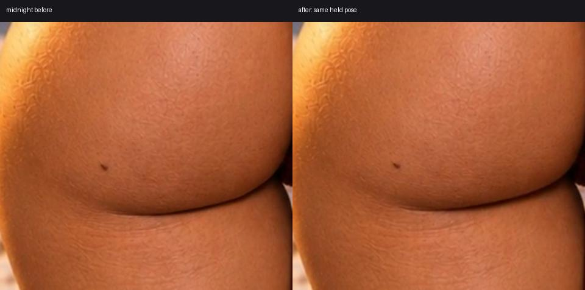

Before / after, with identical held spring poses. Only the rendering boundary changes. These enlarged frames are for reviewing local stretching; use the preview to judge motion.
Open updated preview · Previous boundaries

Method and validation details